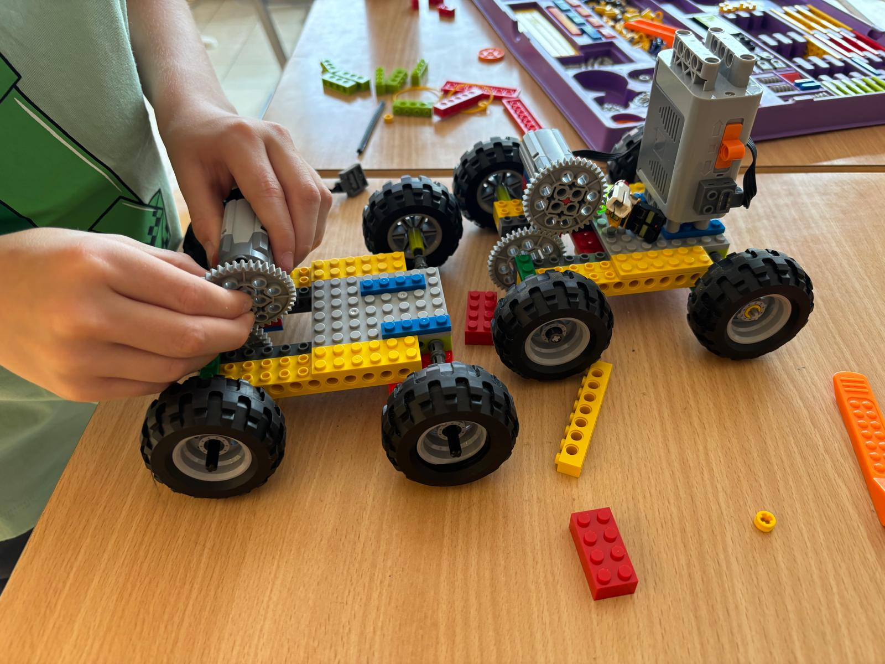
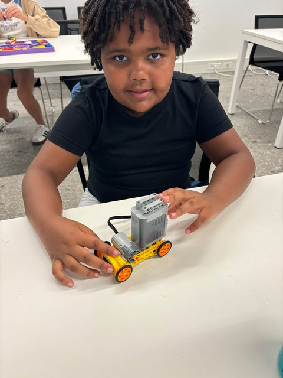

Elke dinsdag, meteen na school
Bouwen, uitvinden
en techniek ontdekken
Young Engineers van Connectopia vzw, in de gebouwen van het Atheneum in Hasselt. Voor nieuwsgierige kinderen van 6 tot 12 jaar.



Wat je kind er doet
Ontdekken, experimenteren, bouwen en vooral plezier maken. Met LEGO en techniek echte uitdagingen aangaan, samenwerken en trots zijn op je werk.
- Elke les een nieuwe uitdaging om te bouwen
- Zelf ondervinden hoe motoren, tandwielen en hefbomen werken
- Samenwerken, proberen, mislukken en opnieuw proberen
- In kleine groepen, met aandacht voor elk kind

Praktisch
Elke dinsdag na school
- 15u20 – 16u35, één les duurt 1u15
- In het Atheneum, Kleine-Breemstraat 33
- Voor 6 tot 12 jaar
- Het hele jaar door instappen kan
€20 per les €25
Zonder extra rijden
Wij halen je kind op
We komen je kind halen op school en gaan samen naar de lokalen van het Atheneum. Jij haalt het daar gewoon op na de les.
Een eerste keer meedoen is gratis. Zo voelt je kind zelf of het past, voor je iets vastlegt.